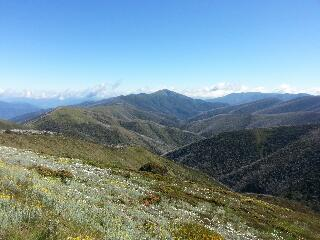
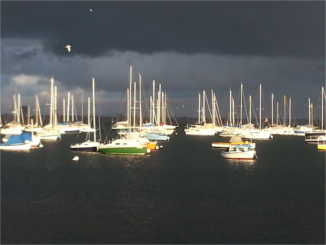
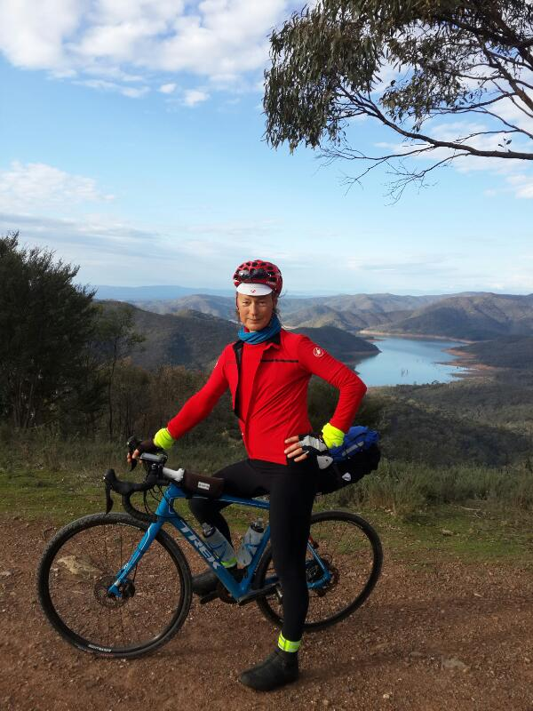
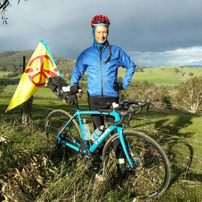
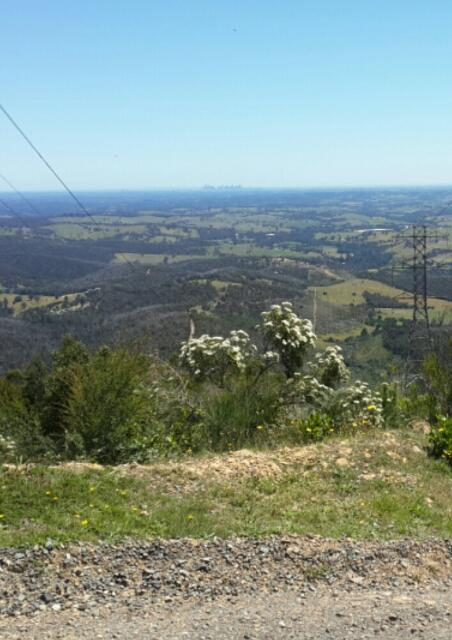

Previous, March 2015-October 2016. Back to start, December 2013
Diagnosis seems a long time ago. I had my bone density checked recently and got the results immediately. I've not yet see a doctor to discuss them but my understanding is that my bone density has gone down a little in the past two years, but no more than is typical for a man of my age. So it seems that the 500+ gym visits, around 21500km of cycling etc have been enough to combat the bone-weakening effects of hormone therapy (I did buy myself a new bike and despite the initial feelings of guilt I'm happy with it and have ridden over 1700km on it already). I also had some other pathology tests and have had no phone calls, so hopefully nothing is drastically wrong there. Physically it seems I'm in great shape. Emotionally I'm in pretty good shape also. There is a degree of fragility but mostly I'm happy, sometimes very happy. When I'm sad it's more often about other people rather than myself. Intellectually I have lost capacity, which is a pity, but I'm not overly concerned. Perhaps if I had spent my time on mental rather than physical activity I would be at the top of my game, but I would very likely have weaker bones, more fat, much less muscle, higher cholesterol levels etc. I'm living a reasonably full life and considering how sick I was three years ago I'm doing amazingly well.
My mother has declined a lot in the last three years. However, my daughter is growing up to be a strong, smart, talented and passionate young woman. I am happy she is not too close to the center of the bell curve. There are too many things wrong with the world to just go with the flow and not try to have an impact. I am relieved I'm able to give her support through this important stage of her life. So life goes on.
I have been using google for e-mail and searching for some years, joined meetup last year then bought myself a usable mobile phone for Christmas, joined Strava early this year to keep track of the rides my friends and I are doing and yesterday the final nail in the coffin - I joined facebook. My current intention is to use it only for cycling-related activities so don't bother asking to be a "friend" for other purposes. I'm not planning to move this blog to facebook, for example, and I am still open to communication via the more traditional channels. I'm informed facebook has the best platform for communicating about potential informal rides etc. but, having been a privacy advocate in the past, I have mixed feelings about joining.
Perhaps the death of privacy was inevitable. But surely the corporatization of personal information was not. It is well understood by economists that free market capitalism results in under-investment in infrastructure. That is why it has always made sense, and always will make sense, for governments to build sewerage systems, roads, telephone networks etc. The fact that amazingly successful infrastructure such as the facebook and google platforms has been developed privately is a bit surprising in this light. There are several reasons. First, it was built on top of the basic infrastructure of the internet that was developed with public money. Second, the main components are software - once created it can be used by billions of people with a tiny marginal cost. Third, there is a subtle but important public cost - the public is paying for this infrastructure with their personal information. Of course the reason why this information is valuable enough to pay for such an infrastructure investment is due to capitalism and consumerism (I'm reminded of my shopping page).
So, how should someone who is unhappy with the state of the world behave? It's often tempting to behave as if the world was how you want it to be, and in some instances that can be a good thing. Planting fruit trees along your front fence and on the nature strip benefits the community, even when some greedy disrespectful people exploit the situation and raid your front yard. Having a small CO2 footprint even when most people around you are trashing the planet has some benefit, and setting good examples can help influence others. But sometimes such behavior has no real benefit. I reluctantly used google for e-mail, avoided facebook, used "private" windows when browsing commercial sites, disabled scripts, removed cookies, and for many years even avoided loading images when browsing, all because I think we should be able to access the world of information without being advertised at and tracked. But such behavior doesn't really make the world any better. To influence the world it's most effective to join political movements and at this stage of my life I choose to spend my time in other ways. Joining facebook has made me sad because I am facing reality and I don't like it.
There are other aspects of reality I have been avoiding. Spending lots of time cycling makes that easy to do. I had another PSA test done a couple of weeks ago and the results were far from my conscious thoughts for nearly all the time until my visit to the oncologist on Wednesday, though there were some symptoms of underlying stress. My PSA level had increased from 0.4 to 0.6. This is still very low, the oncologist was happy with my situation and I felt OK at the time. Afterwards I did feel rather down however. It seems I had a secret hope or even expectation that the results would be better. I'm a bit concerned that being so fit a healthy for so long will make it more difficult when my health declines. Fortunately there was a fast Beach Rd, Mt Eliza ride on Thursday. I didn't feel great at the start but by the end any such thoughts had been blown away. Struggling to hang on to back of a bunch of riders then doing the "Paperboys St Kilda Sprint" at 46.3km/h generating 512W (according to my strava app) has a way put focussing the mind on the here and now...
A while back I received a letter from the hospital about pre-admission appointments for my orchiectomy and last Tuesday I spent the morning seeing a liaison person, nurse, anaesthetist and surgeon, having more blood tests done, etc. I said I wanted to avoid a general anaesthetic (so I'll have a spinal, plus sedation if requested) and wanted to get back on my bike as soon as possible (so I'll have the incision in my groin). They said the operation was scheduled for March 28th. This is a bit sooner than I expected and made everything more real and a little more confronting. Various family members and friends seem to find it more confronting than I do, but compared to what is very likely I'll be faced with in the future, this is a walk in the park. Better harden up! The next day I was called and asked if I would be available to have the operation sooner, so it's now scheduled for the day after tomorrow. So I've planned my last pre-op bike ride for tomorrow and told the gym I'll be absent for at least a couple of weeks. I'm hoping I recover quickly. Being very fit should help. Last Friday I rode over 100km on a reasonably tiring route and the next day I felt I was being very lazy only riding around 86km (including a decent amount of climbing) and getting train/car transport (I caught up with some friends who were doing a 200km ride). Tomorrow I should clock up 4000km for the year. Perhaps I can get some research done while my body recovers...
The day before the operation I rode about 120km and was very surprised how strongly I rode. Personal records all over the place, a great time up the main climb of the day and a pretty good time down the main descent, even my first "cup" on Strava (5th fastest ever on a section of Banksia St in Heidelberg). The operation went mostly as planned. I had a spinal block as expected and was somewhat surprised how long it took to wear off. I had a taste of being a paraplegic for a few hours. I was also given some sedation so I drifted off during surgery. The surgeon suggested a single incision in the scrotum would be best as the groin would require two separate incisions through muscle, so thats what was done. Overall it seemed a bigger deal than I expected. Definitely a different scale to the one person one minute job on the farm. Hopefully I'll be around long enough to make it worthwhile. The only moment of major concern in hospital was when the nurse in the recovery ward saw my heart rate was 35bpm. She relaxed when told I was very fit. The day after surgery the wound didn't look good. I tried several times (unsuccessfully) to get advice from the hospital and the next day I ended up going to the local medical clinic and having the dressing changed. The pain hasn't been too bad and I seem to be healing up ok, though I have been quite tired and have been spending extra time in bed. So far I've climbed ladders and trees to pick figs but resisted the temptation to go for a ride...
I did go for a short ride yesterday afternoon, with no significant problems, though my body felt strange on the bike. And I did a longer ride in the evening to try to get over feeling so tired. It took a quite a while for my body to warm up but then I did a very good time up a smallish hill. Other than a bit of pain in a few muscles I seemed fine and the wound was not too uncomfortable. I haven't lost much condition or gained much weight, though I'll take it easy for a while more. I had a massage today: rather painful due to tight muscles etc but I think it was the right thing to do to get my body back into shape. One other bit of good news: I had a PSA test before the operation and it had dropped back to 0.5.
Three weeks on from the operation. I've ridden around 800km including some hard rides, done a workout at the gym (rather tiring) and a yoga session (my body was rather unbalanced), so I'm getting back to form. The wound is healing somewhat slowly but I saw my urologist last week and he was happy with the progress - it's an area that often doesn't heal well. He also mentioned that they discovered a tumor in one of my testicles when it was removed and it looked like prostate cancer. This is very unusual and it's unclear if it has any significance but I might find out more at my next oncologist visit. But getting the chop certainly seems like a good decision in retrospect, though I am missing them a bit in a way.
The wound has healed pretty well now though there is still some discomfort. I saw the oncologist yesterday. It's unclear what the significance of the tumor was but it apparently would not have caused any harm. However, my PSA has dropped to 0.2, as low as it's been since September 2015! Removing the tumor may have contributed to the lower PSA level, or perhaps it's just natural variability. Whatever the reason, it's a good result and means that the cancer is still responding very well to the lack of testosterone. Somehow my leg muscles are coping as well - they are as strong as ever, probably stronger. I've lost a bit of upper body strength due to lack of gym visits since the operation but I should be able to get it back. I still do chin-ups but wonder if it's worth it as I'm not sure if I'll get back into rock climbing again.
Another oncologist visit last week. My PSA has risen a bit to 0.3. It's still very low and I was confident it would be, but still felt anxious beforehand. It seems I'm not the logical person I once was. But I feel I have a bigger heart (maybe it's all the cycling, maybe the lack of testosterone). I've always cared lots about people and the planet at an intellectual level. Now I feel more love for family and friends. More human perhaps. When my daughter was born almost seventeen years ago it increased the amount of love in my life, something I didn't really expect, but a wonderful thing. I now have more love in my heart because I have changed. It can make things tougher though, when people close to you are not in a good place.
Around six weeks ago I had just finished a pretty intense period of cycling - around 500km in a week. I was fighting off a cold that was hitting a lot of people badly. I still did some hard rides but eventually succumbed to the cold then bronchitis and was quite unwell for some time. During this period my mother was also unwell and had another few days in hospital. My brother also left for a holiday in Queensland. The plan was for mum to be admitted to a nursing home when my brother returned. However, when visiting her after she was discharged from hospital it became clear that she had declined mentally to the point she could no longer look after herself. My partner and I stayed at her place in Hurstbridge for a couple of days and I stayed on to look after her, then arranged for her to move into the nursing home earlier than planned. I was terribly sad. Just a few years ago she was doing regular bush walks and a year ago she was still mentally very alert. Until quite recently she was somewhat resistant to moving to a nursing home, being very happy in the supportive community of Hurstbridge. But she did eventually realise she needed extra care. She is quite happy and being looked after well. With three decent meals per day she seems to have improved a little also. It's harder for me to visit her now though, and I miss my rides to Hurstbridge and lunches with her. It's been a difficult period but my brother has returned and visits mum regularly, mum has settled in, and I'm getting back into some hard rides (and about to hit 10,000km for the year).
A Bill to legalise voluntary assisted dying is currently before the Victorian parliament. I strongly support it and urge Victorians to contact their local members of parliament and voice their support. I posted the following to Stop Victorians Suffering. The photo was taken a couple of months ago on a beautiful ride in the Bass Hills, near Melbourne, with a great bunch of friends.
I am a fifty seven year old man. My life is filled with love and happiness due to my partner, child, other family members, friends, colleagues and my own interests. I am strong and fit. In the first two weeks of August 2017 I cycled over 1000km and in doing so experienced immense beauty, exhilaration, fun and satisfaction. Life is great!
But I have terminal prostate cancer. It's not a good death. Before I was diagnosed and commenced treatment I experienced the dull ache of cancer starting to destroy my bones and excruciating abdominal pain. Unless there is a major medical breakthrough these are just a taste of what is to come. Palliative care can be effective but I don't have confidence it will make the end of my life pleasant. I don't feel scared of dying but what breaks my heart is the thought of the people I love suffering because I am suffering. It is a cycle of pain bound together by love. The thought of it hurts me now.
Suicide is not a good solution. It is awful for those committing it and those who have to deal with it. It can also be difficult or even impossible when your body is ravaged by prostate cancer. I see voluntary assisted dying as different. It offers the option of a good death. Depending on the success of palliative care and other factors I may or may not want my life to end that way. But if I knew I had the option of a good death it would help me continue to have a good life.
Another oncologist visit yesterday: PSA up a bit to 0.4 again. I was encouraged to do the "Alpine Classic Extreme" bike ride in January - 250km with over 4000m of climbing, including Mt Hotham and the infamous back of Falls Creek. I'll be doing it with friends and hope to enjoy it on the day, though I might have some moments of discomfort, pain or even regret along the way. I have also planned a 300km ride around Melbourne next week, weather permitting, and some friends will be joining me. I've had a bit of knee pain recently and have not been riding that much, so fingers crossed! It's great to have the fitness and friends to be able to do such rides.
The voluntary assisted dying legislation is being debated in the Legislative Assembly this week and I have been doing my bit with lobbying. My post above (slightly edited) was put on the Stop Victorians Suffering site, I made the front page of the local paper (which was part of the information pack given to MPs with the Bill), I attended a function at parliament house and made it onto the ABC and Chanel 9 evening news and I have been active on Facebook. The numbers look promising so far. The legislation is quite conservative and only applies to Australian citizens, so I might have to become one at some point after all.
A while back my partner had a solo show in the Melbourne Fringe Festival and I did a fair bit of helping out: set making, publicity (the headaches of fighting with Facebook), a bit of directing, bumping in and out, etc. It was probably the closest I'll ever come to getting married. I thought is was a great show, provoking many thoughts and emotions, and the season went well. It was nice to use my creative side a bit more and share more with my partner, though putting on such a show is a great deal of work and rather stressful at times.
Research is slow, if it is moving at all, and my Ph.D. student is writing her thesis. There are still ideas I would really like published but I don't feel quite as motivated (or quite as able) to go to the effort of getting it done. I'm also a bit low on motivation for things such as gardening and going to the gym. I'm a bit fragile emotionally as well - sometimes it doesn't take much to bring me down. But generally I'm happy, positive and enjoying life.
I saw my specialist GP on Wednesday. Most of the pathology results were good. My cholesterol level is a bit high, as is my blood pressure - it took a few attempts at relaxing before it reached 148/85 (BP readings do tend to stress me a bit nowadays). Increased risk of cardiovascular disease is one of the many side-effects of having very low testosterone levels. I could loose a bit of weight, though my BMI is in the healthy range. I certainly do a lot of exercise and this month I have surpassed various personal records. On the first day I had organised a ride I called the "Triple Treat": three riders (a couple more met us for the last stretch), a bit over three thousand metres of climbing and over three hundred kilometers. It was the longest ride for all three of us and we still had energy to spare at the end. Some neat technology created this video of the ride. After two days rest I had another great long weekend of cycling with friends based in Mansfield, riding to Whitfield and back (spectacular, though I possibly pushed myself a bit too hard on that one) a "recovery" ride up Mt Buller the next day then from Jaimeson to Eildon and back. By the end of the first week I had ridden about 745km and climbed approximately the height of Everest (8800m) and by the end of the second week around 1300km (including the beautiful Acheron Way loop).
Being a road cyclist has become an important part of my identity or self-image. I used to identify as being a rock climber, and though I have not climbed for some time and I'm not sure I'll climb again, I still cling to that a little: I still persist with chinups at the gym, though I have still not re-gained my pre-operation upper body strength. It's largely about ego I guess (like this blog). I have spent a lot of time seemingly trying to make myself feel better about myself. Perhaps I learned that pattern of behavior when I was young and lacked confidence. I do find it somewhat frustrating now - it would be nice to just feel good about myself without wasting time on such things. Having a terminal illness has also become an important part of my identity (despite being mortal not being much of my identity before diagnosis). Perhaps that is a strategy to elicit sympathy from others (something it seems I often try to do, though not deliberately) and also sympathy from myself. I generally feel pretty happy and have had some very happy times recently, but I have gone through periods of getting upset. On the surface it has been about the problems, misfortune and pain of other people (or my real or imagined perception of it). But I think some of it was what I like to call "proxy crying" - underneath I was feeling sorry for myself. It's a less confronting way of dealing with my own problems. Am I messed up? No more than a typical human I think!
Between Christmas and the New Year I went to Bright for cycling with friends, around 680km in five days, with lots of climbing. One highlight was smashing it for the last 5km into Yackandanda at an average speed of 57km/h; only two people out of 1200 have ever done it faster than our bunch according to Strava. Another was completing the Alpine Classic Extreme 250km route (Bright - Harrietville - Mt. Hotham - Dinner Plain - Omeo - Anglers Rest - Falls Creek - Mt Beauty - Tawonga Gap - Bright), having been persuaded by my friends to do it just 12 hours before. It is the hardest ride I have done and made a bit harder because I recently gained a few kg, something I'm currently trying to reverse. The Alpine scenery on this route (and Mt. Buffalo) was wonderful. Below is a photo I took from Mt. Hotham, looking towards Mt. Feathertop.
With another year passed it's time to reflect on some of the significant events that occurred. Health-wise my PSA went up then down, when I had the orchiectomy, then up to about the same level it was a year ago. Given that December marked four years since diagnosis it's an excellent result. Other pathology results are ok so I'm coping with the side-effects of lack of testosterone to date, and emotionally I feel pretty good. I'm sure the exercise I do helps with both of these: close to 18000km ridden (and something like 16000m vertical) and 133 gym visits. I've lost a bit of upper body strength but my general fitness and endurance is excellent. My memory is poor and my mathematical and spatial thinking ability has declined. I co-authoured one conference paper and two journal papers and my Ph.D. student submitted her thesis, but the "pipeline" of papers is sluggish at best. I do more feeling and less thinking these days and am more into people than computer science. I've also embraced social media (Strava, Facebook) more than I would have expected.
My family continues to be great source of great support and (mostly) happiness. My mother declined significantly and moved to a nursing home - the saddest episode of the year for me. My daughter completed her first two VCE subjects and applied to enrol in a university subject along with her final high school subjects this year. Her musicianship and interest in politics and history continues to grow. My partner put on a great show in the Melbourne Fringe Festival and I was proud to be part of it.
And I can't finish this post without another mention of the pleasures of cycling, particularly with friends. It's hard to pick highlights when there have been so many. The recent riding in Bright comes to mind. As does the Triple Treat ride I organised (my longest ride), my longest solo ride to Pt. Nepean and back, the ride to Licola and beyond, and the many beautiful rides around Hurstbridge and the Bass Hills. It still amazes me how I can be part of a group of riders who are so strong and work so well together. Riding 170km from Yarra Junction to Mt. Baw Baw and back (arguably the hardest road cycling climb in Victoria and with no lunch at the top), the last 10 kilometers were a wonderful display of strength, endurance and common values. With no communication, stronger riders went to the front a set the perfect pace, which gradually increased until the whole group was close to their limit as we finished the ride with smashing style, exhausted and exhilarated. Then several of us went to Warburton to help three other friends with their successful quest to climb 10000m in one ride, doing laps of Mt. Donna Buang - an astonishing effort. And it's not just the hard riding that has been enjoyable. The views and company on rides down to Williamstown or Altona have been wonderful (see photo below), and the easy ride to Mordialloc to see Cadel Evans and the long lunch afterwards - what happiness!
I'm currently recovering from another trip to Bright. A bit over two weeks ago, on the day before the ACE250 ride, I went on an easy ride and was knocked unconscious for five minutes when a kid on a mountain bike pulled out in front of me to cross the road on a blind bend without looking for traffic (he had been told off previously for doing similar things). I was taken by ambulance to Wangaratta. There was hardly a scratch and nothing broken but a bruised heel and some (seemingly not too serious) damage to my brain. So no ACE250 for me and I've missed a couple of group rides since but I'm now back to doing hard rides.
Some time ago I went though a brief dark patch, and when thinking about love and desperately not wanting to die I felt there was a strong connection between the two. Is love our way to try to cheat death or at least our reaction to it? Perhaps evolution has resulted in the sexual part of love being connected with death. Falling in love and/or wanting sex are not unusual responses to the death of someone close. The fact that I feel more love now (as I discussed a while back) could be due to death feeling closer rather than hormonal changes. In saying this and what follows I'm not suggesting it is the only correct way of viewing things, or it applies to everyone, but it might reveal some truth in some cases. It is food for thought, not judgement, and a way of trying to understand myself and my friends better. If it helps some others understand themselves also, all the better. And I don't want to offend anyone, particularly my friends, but if you do feel strongly about anything here I would say it may be a sign of there being truth in it for you. I've been struggling with trying to figure out what typical road cyclists are like and what typical rock climbers are like. The fact that it says things about me (and possibly things I don't like) makes this difficult, and I certainly don't feel like I have many answers. But, with more than a little trepidation, here are some thoughts.
Rock climbing takes you away from your other cares like no other pastime in my experience. Perched half way up a cliff, well above your protection and knowing that a tiny twist of your foot or reaching for the next hold with the wrong hand will result in an uncontrolled plummet is a guaranteed escape from life's other difficulties. To be good at rock climbing it is important to be physically strong, able to judge the right moves to make and able to overcome the fear of falling. I think this can be a substitute for being emotionally strong and overcoming fear of intimacy. Love and intimacy are scary and can require emotional strength. Rock climbers courageously face death with physical strength but often we are too scared and emotionally weak to confront love and intimacy. This connection between love and death is almost the opposite of the one alluded to above: embracing (near) death to avoid love rather than embracing love to avoid death. But the human mind is full of apparent contradictions so both can be true. I recommend embracing love.
Road cycling is a less intense activity at its peak, but still allows you to escape. You can use your strength and endurance to go fast and far. I feel that for me, part of the attraction is the feeling that by pedalling fast enough for long enough I can escape the clutches of the grim reaper, at least for a while more. Perhaps thats why it's so popular amongst middle-aged men: the fear of old age, and death at the end, makes us want to take off at high speed. Recently I've also become aware of how insecure many people are. It may partly be a reflection of my own insecurity or just part of the human condition - life is fleeting in the big picture. The advertising industry certainly knows how to manipulate insecurity, especially all those women who are unlucky enough to not have a "perfect" body. But I think there is reason to believe that us road cyclists are a particularly insecure bunch. I suspect quite a few of us are trying to pedal away from whatever we feel insecure about, whether it is the future (such as death), the past (such as childhood traumas), the present (such as love and intimacy) or a combination of all three.
Addendum: I accidentally deleted that last paragraph when I added the entry below. A Freudian slip perhaps?
Just back from another oncologist appointment. A different doctor this time. I had mostly avoided stressing over it until the last day but my PSA has risen from 0.4 to 0.63. More than I had hoped for. My only positive way of spinning it is that I had ridden about 240km a couple of days before I had the blood tests done and it seems that long rides do tend to increase PSA level due to pressure on the prostate from the saddle. Perhaps it explains the drop in my PSA following my orchiectomy also. I heard the head of the APCR at once say that, from a medical perspective, ideally patients should not ride a bike for a while before getting a PSA test done, but many patients strongly resist this. He understands the MAMIL mentality! Anyway, the bottom line for now is carry on.
I had some ongoing heel pain from my bike accident in January. Riding wasn't a problem but putting weight on the back of the foot was uncomfortable so I was walking with a limp. Eventually I saw my GP and a podiatrist, who gave some advice. Then another problem developed on the side of my foot so I couldn't put pressure on the foot at all without intense pain. Another trip to a hospital emergency department (Royal Melbourne this time) and later the podiatrist and I'm now wearing a moon boot and walking with crutches. The diagnosis is still not clear. It's possible I had a hairline fracture in my heel that was not picked up at the time of the accident and the more recent problem could be tendon related but the experts are unsure. It's been a few days without cycling (or climbing the fig tree) but the pain has subsided and I'm hoping I am able to do another long ride on Saturday without things flaring up again.
I had another specialist GP appointment and oncologist appointment this week. My PSA went up a little, to 0.77. I was scared the day before (and behaving somewhat like a zombie) but felt ok after seeing the GP. The oncologist said she was even more confident that my PSA was likely to rise only slowly for quite a while, and was happy to make my next appointment in six months rather than the normal three, so thats good news. I have been considering asking about a revised prognosis. Given how well I have done to date I'm sure it will be more positive. New treatment options being developed make it harder to predict how long I'll live, but it keeps growing I guess.
My "velotherapy" (aka just ride your bike) continues, with quite a few solid (even hard) 100+km rides and a fantastic 250+km ride along the Great Ocean Road and around the Otways referred to above (despite one leg cramping for the last 150km because the heel problem lead to lack of stretching and uneven leg use). A couple of times I have thought my heel was good enough to start using again but then it got worse again. It's been a long process, frustrating at times, and I still use a crutch at times and walk with a pronounced limp. I've also signed up for a two day introductory bike packing ride with a couple of legends of endurance cycling: Sarah Hammond and Jesse Carlsson, so I've done a bit more riding on gravel and bought myself a saddle pack to carry more gear (but no new bike, yet).
I also continue to go to the gym. When I skipped gym for a bit after my orchiectomy I lost some upper body strength and wondered if I would ever re-gain it, but recently I did the same number of chinups I was doing before the operation. Research has been close to stationary, but my PhD student received good examiners' reports and is on the verge of submitting her revised thesis and joining the ranks of those with a "Dr." prefix.
I reached a couple of milestones recently: 750 gym visits (I'm waiting with anticipation for the free tee shirt:) and 50,000km of cycling since I was diagnosed. The latter I achieved on a fantastic day of riding on my second bike packing trip with some amazing endurance cyclists (lead by Sarah and Jesse) and others more of my calibre (see photo below). Riding on isolated back roads, through snow and lifting bikes over innumerable fallen trees etc makes it a very different experience to road cycling and has given me and others a taste of the amazing adventurous rides some people do. As I write this, a 19 year old woman is attempting to break the record for cycling around the world, another cyclist is on the last leg of his attempt to break the record for cycling from the southern to northern tip of Britain and back again and others are starting to prepare for the next installment of Race to the Rock (Uluru) - riding with no support and minimal sleep on some of Australia's toughest roads. Such things require amazing physical endurance and extreme mental toughness. Often this mental toughness has been tested and perhaps strengthened by previous battles with major health problems or other difficulties. Some people would say that these feats of endurance are pointless, but for others they are inspiring.
Occasionally I am asked (or I wonder) what happened to my Chronic Fatigue Syndrome. I think it gradually diminished but is still lurking in the background in a much reduced form. My occasional episodes of fatigue seem to be caused by lifting weights close to the limit of my strength. My latest bout was this week and I'm sure it was triggered by doing a few reps of 50kg on the chest press at the gym on Monday. It took less than a minute, though the rest of my gym workout, my first hard road ride for a while on Saturday and having a bit of a cold might also have been contributing factors. I got up during Monday night and felt fatigued. By Tuesday afternoon I was exhausted and spent a couple of hours in bed. I got out of bed to have dinner and could hardly walk. Although I became accustomed to such things (and worse) and was confident I would bounce back with a bit of rest, it still makes me a little depressed. By Thursday morning I was feeling better physically but still not the best emotionally. Rather than do one of the myriad of things that need doing, I went for a ride.
Battling a strong head wind on the bike path to Craigieburn gave me plenty of opportunity for thinking. Why is it I procrastinate so much? I concluded it's a strategy I use to avoid confronting the void - the fact that life is pretty meaningless and death is no better. By having important things at the top of my list of what I really should do (or have done long ago) means that confronting the void drops lower down the list and can be ignored more easily. There are lots of other strategies people use to save themselves from confronting the void, from constantly worrying about other things to using drugs and alcohol. Another strategy is to try to fill the void. I would say religion is an attempt at that. And I guess just riding your bike is another. It doesn't make life particularly meaningful but if it makes you feel good it's not a bad way to spend your time.
Addendum (15/9/2018): Sarah just won Race to the Rock again, around 700km ahead of her nearest rival (another rider was closer but had to withdraw due to a mechanical failure) - what a champion!
Two weeks ago I was preparing for another bike packing trip, riding from Melbourne over several days with people who I did not know but with a precious cargo. Some are still riding now, heading to Canberra. The group is carrying the Nobel Peace Prize, awarded to ICAN (International Campaign to Abolish Nuclear Weapons) "for its work to draw attention to the catastrophic humanitarian consequences of any use of nuclear weapons and for its ground-breaking efforts to achieve a treaty-based prohibition of such weapons." The aim of the ride is to publicise the nuclear weapon ban treaty and lobby for Australia to sign and ratify the treaty.
I was a bit concerned about how it would turn out but I had a fantastic time. A great bunch of people, some very enjoyable riding, amazing hospitality from people along the way, the honour of carrying the prize for a day and a feeling that I was part of something much bigger, doing good. The peace movement has a proud history and this is not the first epic bike ride for peace; nor will it be the last, I'm sure. In the 1980's I was involved in organising some of the huge peace rallies in Melbourne and was arrested for climbing the Arts Center spire to unfurl a protest banner. In recent years I have not been active in the peace movement but it was great to re-connect with this group. I'm confident that Australia will sign the nuclear weapon ban treaty and I look forward to the day when nuclear weapons are considered illegal, like land mines, cluster bombs and chemical and biological weapons. At least in my daughter's lifetime, if not mine. And I'm proud to be part of a movement working towards this goal.
Around a month ago the latest round of tests, appointments etc started. I was hoping it would be over quickly to minimise stress but it dragged out for some time. My blood pressure, cholesterol etc are still ok, my bone density has decreased around 5% in the last couple of years (significantly more than the last decrease but my doctor was not too concerned) and my PSA has increased to 1.17 (a 50% increase over 6 months) - still low and I expected it to exceed 1 for the first time since my treatment kicked in, but it does worry me that this time it's really on the increase. I've switched my oncologist appointments to the Peter MacCallum Cancer Centre as they have better oncology support than the Prostate centre. Oncologists are still amazed by how well I'm doing. It's now been five years since diagnosis, a milestone I somehow neglected to celebrate. At the time the expectation was I had a 75% change of being dead by now and 20% change of being terminally ill with effective treatment options almost exhausted. Luckily I'm in the other 5%, and presumably towards the top end of that considering my current fitness level (I've had 140 gym visits this year and on a good day I do four sets of eight chin-ups without straining and bench press 50kg; as for aerobic and lower body fitness, I'm still doing rides of epic proportions - see Transportation below). My bike accident in January, and subsequent recovery that took almost six months, was frustrating but seems to have had no lasting effects. So in additional to still being alive, my physical health is amazingly good.
I'm not sure if I (or anyone else) has such a good understanding of my mental health. I'm aware of quite a lot of underlying fear. I did a fund-raising ride with the Peter Mac Cancer Surgery team and while it was nice in some ways to be with others who had a common interest a purpose, it was also a little confronting. On the day I felt a little frustrated by the slow pace at the start so I zoomed off at high speed and did a longer route than most of the team. I enjoy fast riding but I realise it is partly driven by fear. Fear can also cause a degree of paralysis. There are certainly things I find very hard to get around to doing. There may be a degree of fear-related paralysis as well as laziness and other things I have alluded to earlier. My behavior is also rather obsessive - cycling so much being a prime example. But overall I think my mental health is not as amazingly good as my physical health, but still not too bad.
I've ridden a over 17000km this year but slightly less than last year. Highlights have included rides around Adelaide during the Tour Downunder, the Great Ocean Road ride, reaching 50000km since diagnosis, bike packing (the rides organised by Sarah and Jesse, the Nobel Peace Ride and a ride up and around Warburton, including climbing Mt Donna Buang in the snow, that I organised), fast road rides in places such as the Bass Hills, Hotham and other climbs around Bright, my recent Three and a bit peaks of Melbourne ride (300+km and 4000+m of climbing), easy social rides with friends and recent gravel rides, especially around Kinglake. Two months ago I bought myself a new gravel bike - minimal feelings of guilt this time and I think I'll get plenty of fun out of it. Below is a photo taken descending Bowden Spur from Kinglake on a ride I recently lead.
I was very happy with two policies adopted by the Australian Labor Party national conference: signing the Nuclear Ban treaty and restoring the foreign aid budget that has been repeatedly cut in recent years. I've been active campaigning on both these issues. My partner and daughter are currently in Europe, on a two month trip. I miss them but have so far been fending for myself effectively. Fortunately communication is so much easier now than it once was. I am still not an Australian citizen and have only made marginal progress towards that goal this year despite intending to, so I can make use of the voluntary assisted dying legislation if needed (recently the conservative side of politics threatened to overturn this legislation but received a well-deserved drubbing in the State elections and Fiona Patten, who worked hard on the legislation, was re-elected).
I decided not to join my family in Europe due to the environmental cost. I calculated a return flight to Europe for one person has approximately the same carbon footprint as five years of our household electricity usage, if it was generated mostly using brown coal. We now buy 100% "green" electricity, produce more with our small photo-voltaic array than we use (plus I've paid for part or all of three other PVAs) and pay for carbon offsets for our natural gas usage. I may now have a positive affect on reducing climate change but it will take a lot more to make up for the impact I have had in the past, and the lack of policy at the federal level is shameful.
I was relieved that my daughter was able to finish high school while I was still in good health. She worked hard, did well and I'm expected she will have an enjoyable and successful few years at a good university.
The garden receives less attention than it deserves but is still reasonably productive and I (and the local wildlife) are reaping the rewards. I've had a decent feed of cherries and English mulberries for the first time, zucchinis and tomatoes are starting, eggplants are on the way and I eventually had more success grafting with them onto devil plants. The possum situation is not as dire as it was a while back.
A few years ago the conservative federal government decided we didn't need a science ministry. I haven't done much either this year, though it was good that my final PhD student graduated.
I've never been a big fan of money - some people love the stuff but not me. Better to have too much than too little I guess, and I do give some away. Getting some financial things sorted out was one of the goals of 2018 I didn't achieve. Lets call it a work in (slow) progress.
If this upsets you (and you are in Australia) you can call Lifeline on 131114.
{kind=link}